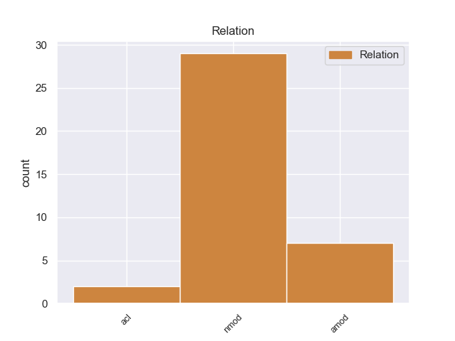
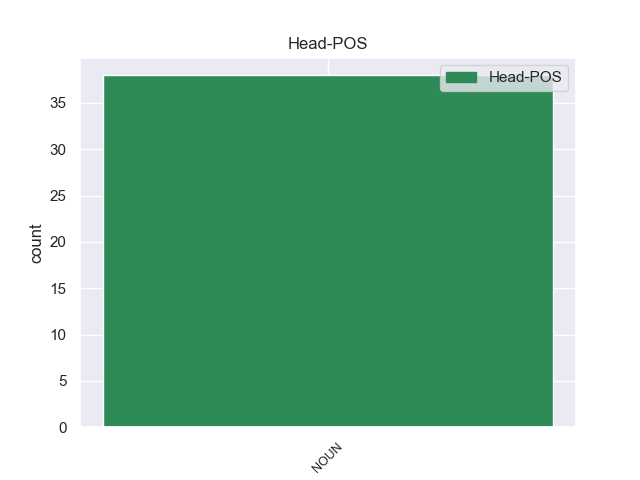
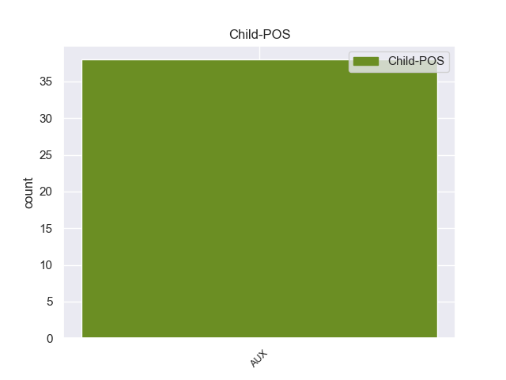

Distribution of features within this leaf



Agreement Rules sorted by frequency.
- When the dependent token is the adjectival modifier(amod) of the head token, and the head token is NOUN and the dependent token is AUX.
1 गैर _ _ _ _ 0 _ _ _
2 पेशेवर _ _ _ _ 0 _ _ _
3 मकसद _ _ _ _ 0 _ _ _
4 के _ _ _ _ 0 _ _ _
5 लिए _ _ _ _ 0 _ _ _
6 पहचानी _ _ _ _ 0 _ _ _
7 जाने जा AUX -- Case=Acc|VerbForm=Inf 11 amod _ _
8 वाली _ _ _ _ 0 _ _ _
9 डॉट _ _ _ _ 0 _ _ _
10 ओआरजी _ _ _ _ 0 _ _ _
11 वेबसाइटों वेबसाइट NOUN -- Case=Acc|Gender=Fem|Number=Plur|Person=3 0 _ _ _
12 का _ _ _ _ 0 _ _ _
13 प्रमुख _ _ _ _ 0 _ _ _
14 केंद्र _ _ _ _ 0 _ _ _
15 अब _ _ _ _ 0 _ _ _
16 भारत _ _ _ _ 0 _ _ _
17 ही _ _ _ _ 0 _ _ _
18 होगा _ _ _ _ 0 _ _ _
19 । _ _ _ _ 0 _ _ _
1 अगले _ _ _ _ 0 _ _ _
2 तीन _ _ _ _ 0 _ _ _
3 साल _ _ _ _ 0 _ _ _
4 में _ _ _ _ 0 _ _ _
5 सीटों _ _ _ _ 0 _ _ _
6 व _ _ _ _ 0 _ _ _
7 यात्रियों _ _ _ _ 0 _ _ _
8 को _ _ _ _ 0 _ _ _
9 ले _ _ _ _ 0 _ _ _
10 जाने जा AUX -- Case=Acc|VerbForm=Inf 12 nmod _ _
11 की _ _ _ _ 0 _ _ _
12 क्षमता क्षमता NOUN -- Case=Acc|Gender=Fem|Number=Sing|Person=3 0 _ _ _
13 में _ _ _ _ 0 _ _ _
14 सौ _ _ _ _ 0 _ _ _
15 फीसदी _ _ _ _ 0 _ _ _
16 की _ _ _ _ 0 _ _ _
17 वृद्धि _ _ _ _ 0 _ _ _
18 होने _ _ _ _ 0 _ _ _
19 की _ _ _ _ 0 _ _ _
20 संभावना _ _ _ _ 0 _ _ _
21 है _ _ _ _ 0 _ _ _
22 । _ _ _ _ 0 _ _ _
1 प्रस्तावित _ _ _ _ 0 _ _ _
2 संशोधन _ _ _ _ 0 _ _ _
3 में _ _ _ _ 0 _ _ _
4 अंडरगारमेंट _ _ _ _ 0 _ _ _
5 या _ _ _ _ 0 _ _ _
6 कमर _ _ _ _ 0 _ _ _
7 के _ _ _ _ 0 _ _ _
8 नीचे _ _ _ _ 0 _ _ _
9 पहने _ _ _ _ 0 _ _ _
10 जाने जा AUX -- Case=Acc|VerbForm=Inf 14 acl _ _
11 वाले _ _ _ _ 0 _ _ _
12 किसी _ _ _ _ 0 _ _ _
13 भी _ _ _ _ 0 _ _ _
14 परिधान परिधान NOUN -- Case=Acc|Gender=Masc|Number=Sing|Person=3 0 _ _ _
15 में _ _ _ _ 0 _ _ _
16 तिरंगे _ _ _ _ 0 _ _ _
17 का _ _ _ _ 0 _ _ _
18 इस्तेमाल _ _ _ _ 0 _ _ _
19 नहीं _ _ _ _ 0 _ _ _
20 किया _ _ _ _ 0 _ _ _
21 जा _ _ _ _ 0 _ _ _
22 सकेगा _ _ _ _ 0 _ _ _
23 । _ _ _ _ 0 _ _ _
Disagree Examples:
1 इस _ _ _ _ 0 _ _ _
2 बारे _ _ _ _ 0 _ _ _
3 में _ _ _ _ 0 _ _ _
4 राज्यसभा _ _ _ _ 0 _ _ _
5 में _ _ _ _ 0 _ _ _
6 एक _ _ _ _ 0 _ _ _
7 प्रश्न _ _ _ _ 0 _ _ _
8 के _ _ _ _ 0 _ _ _
9 जवाब _ _ _ _ 0 _ _ _
10 में _ _ _ _ 0 _ _ _
11 विदेश _ _ _ _ 0 _ _ _
12 मंत्री _ _ _ _ 0 _ _ _
13 नटवर _ _ _ _ 0 _ _ _
14 सिंह _ _ _ _ 0 _ _ _
15 ने _ _ _ _ 0 _ _ _
16 कहा _ _ _ _ 0 _ _ _
17 कि _ _ _ _ 0 _ _ _
18 नेपाल _ _ _ _ 0 _ _ _
19 नरेश _ _ _ _ 0 _ _ _
20 ज्ञानेंद्र _ _ _ _ 0 _ _ _
21 द्वारा _ _ _ _ 0 _ _ _
22 प्रधानमंत्री _ _ _ _ 0 _ _ _
23 मनमोहन _ _ _ _ 0 _ _ _
24 सिंह _ _ _ _ 0 _ _ _
25 व _ _ _ _ 0 _ _ _
26 उन्हें _ _ _ _ 0 _ _ _
27 देश _ _ _ _ 0 _ _ _
28 में _ _ _ _ 0 _ _ _
29 आपातकाल _ _ _ _ 0 _ _ _
30 हटाए _ _ _ _ 0 _ _ _
31 जाने जा AUX -- Case=Acc|VerbForm=Inf 46 nmod _ _
32 , _ _ _ _ 0 _ _ _
33 राजनीतिक _ _ _ _ 0 _ _ _
34 कैदियों _ _ _ _ 0 _ _ _
35 के _ _ _ _ 0 _ _ _
36 छोड़े _ _ _ _ 0 _ _ _
37 जाने _ _ _ _ 0 _ _ _
38 व _ _ _ _ 0 _ _ _
39 लोकतांत्रिक _ _ _ _ 0 _ _ _
40 प्रक्रिया _ _ _ _ 0 _ _ _
41 जल्द _ _ _ _ 0 _ _ _
42 शुरू _ _ _ _ 0 _ _ _
43 किए _ _ _ _ 0 _ _ _
44 जाने _ _ _ _ 0 _ _ _
45 के _ _ _ _ 0 _ _ _
46 आश्वासन आश्वासन NOUN -- Case=Nom|Gender=Masc|Number=Plur|Person=3 0 _ _ _
47 देने _ _ _ _ 0 _ _ _
48 के _ _ _ _ 0 _ _ _
49 बाद _ _ _ _ 0 _ _ _
50 यह _ _ _ _ 0 _ _ _
51 कार्रवाई _ _ _ _ 0 _ _ _
52 करना _ _ _ _ 0 _ _ _
53 खेद _ _ _ _ 0 _ _ _
54 जनक _ _ _ _ 0 _ _ _
55 है _ _ _ _ 0 _ _ _
56 . _ _ _ _ 0 _ _ _
1 श्रीनगर _ _ _ _ 0 _ _ _
2 - _ _ _ _ 0 _ _ _
3 मुजफ्फराबाद _ _ _ _ 0 _ _ _
4 बस _ _ _ _ 0 _ _ _
5 से _ _ _ _ 0 _ _ _
6 २ _ _ _ _ 0 _ _ _
7 जून _ _ _ _ 0 _ _ _
8 को _ _ _ _ 0 _ _ _
9 पाक _ _ _ _ 0 _ _ _
10 अधिकृत _ _ _ _ 0 _ _ _
11 कश्मीर _ _ _ _ 0 _ _ _
12 और _ _ _ _ 0 _ _ _
13 पाकिस्तान _ _ _ _ 0 _ _ _
14 की _ _ _ _ 0 _ _ _
15 प्रस्तावित _ _ _ _ 0 _ _ _
16 यात्रा _ _ _ _ 0 _ _ _
17 के _ _ _ _ 0 _ _ _
18 दौरान _ _ _ _ 0 _ _ _
19 हुर्रियत _ _ _ _ 0 _ _ _
20 नेताओं _ _ _ _ 0 _ _ _
21 को _ _ _ _ 0 _ _ _
22 अपने _ _ _ _ 0 _ _ _
23 साथ _ _ _ _ 0 _ _ _
24 पासपोर्ट _ _ _ _ 0 _ _ _
25 ले _ _ _ _ 0 _ _ _
26 जाने जा AUX -- Case=Acc|VerbForm=Inf 28 nmod _ _
27 की _ _ _ _ 0 _ _ _
28 हिदायत हिदायत NOUN -- Case=Nom|Gender=Fem|Number=Sing|Person=3 0 _ _ _
29 दी _ _ _ _ 0 _ _ _
30 गई _ _ _ _ 0 _ _ _
31 है _ _ _ _ 0 _ _ _
32 . _ _ _ _ 0 _ _ _
1 इस _ _ _ _ 0 _ _ _
2 बीच _ _ _ _ 0 _ _ _
3 पुलिस _ _ _ _ 0 _ _ _
4 ने _ _ _ _ 0 _ _ _
5 उन _ _ _ _ 0 _ _ _
6 बैगों _ _ _ _ 0 _ _ _
7 को _ _ _ _ 0 _ _ _
8 पहचान _ _ _ _ 0 _ _ _
9 कर _ _ _ _ 0 _ _ _
10 लेने ले AUX -- Case=Acc|VerbForm=Inf 12 nmod _ _
11 का _ _ _ _ 0 _ _ _
12 दावा दावा NOUN -- Case=Nom|Gender=Masc|Number=Sing|Person=3 0 _ _ _
13 किया _ _ _ _ 0 _ _ _
14 है _ _ _ _ 0 _ _ _
15 , _ _ _ _ 0 _ _ _
16 जिनमें _ _ _ _ 0 _ _ _
17 विस्फोटक _ _ _ _ 0 _ _ _
18 भरकर _ _ _ _ 0 _ _ _
19 तीन _ _ _ _ 0 _ _ _
20 अलग _ _ _ _ 0 _ _ _
21 - _ _ _ _ 0 _ _ _
22 अलग _ _ _ _ 0 _ _ _
23 स्थानों _ _ _ _ 0 _ _ _
24 पर _ _ _ _ 0 _ _ _
25 रखे _ _ _ _ 0 _ _ _
26 गए _ _ _ _ 0 _ _ _
27 थे _ _ _ _ 0 _ _ _
28 . _ _ _ _ 0 _ _ _
1 दोनों _ _ _ _ 0 _ _ _
2 पक्षों _ _ _ _ 0 _ _ _
3 की _ _ _ _ 0 _ _ _
4 दलील _ _ _ _ 0 _ _ _
5 सुनने _ _ _ _ 0 _ _ _
6 के _ _ _ _ 0 _ _ _
7 बाद _ _ _ _ 0 _ _ _
8 हाईकोर्ट _ _ _ _ 0 _ _ _
9 की _ _ _ _ 0 _ _ _
10 खंडपीठ _ _ _ _ 0 _ _ _
11 ने _ _ _ _ 0 _ _ _
12 निचली _ _ _ _ 0 _ _ _
13 अदालत _ _ _ _ 0 _ _ _
14 के _ _ _ _ 0 _ _ _
15 फैसले _ _ _ _ 0 _ _ _
16 को _ _ _ _ 0 _ _ _
17 सही _ _ _ _ 0 _ _ _
18 ठहराते _ _ _ _ 0 _ _ _
19 हुए _ _ _ _ 0 _ _ _
20 मौत _ _ _ _ 0 _ _ _
21 की _ _ _ _ 0 _ _ _
22 सजा _ _ _ _ 0 _ _ _
23 बनाए _ _ _ _ 0 _ _ _
24 रखने रख AUX -- Case=Acc|VerbForm=Inf 26 nmod _ _
25 का _ _ _ _ 0 _ _ _
26 आदेश आदेश NOUN -- Case=Nom|Gender=Masc|Number=Sing|Person=3 0 _ _ _
27 दिया _ _ _ _ 0 _ _ _
28 । _ _ _ _ 0 _ _ _
1 दिल्ली _ _ _ _ 0 _ _ _
2 उच्च _ _ _ _ 0 _ _ _
3 न्यायालय _ _ _ _ 0 _ _ _
4 ने _ _ _ _ 0 _ _ _
5 बॉलीवुड _ _ _ _ 0 _ _ _
6 अदाकारा _ _ _ _ 0 _ _ _
7 करिश्मा _ _ _ _ 0 _ _ _
8 कपूर _ _ _ _ 0 _ _ _
9 को _ _ _ _ 0 _ _ _
10 चार _ _ _ _ 0 _ _ _
11 महीने _ _ _ _ 0 _ _ _
12 की _ _ _ _ 0 _ _ _
13 बेटी _ _ _ _ 0 _ _ _
14 समीरा _ _ _ _ 0 _ _ _
15 को _ _ _ _ 0 _ _ _
16 अपने _ _ _ _ 0 _ _ _
17 साथ _ _ _ _ 0 _ _ _
18 विदेश _ _ _ _ 0 _ _ _
19 नहीं _ _ _ _ 0 _ _ _
20 ले _ _ _ _ 0 _ _ _
21 जाने जा AUX -- Case=Acc|VerbForm=Inf 23 nmod _ _
22 का _ _ _ _ 0 _ _ _
23 आदेश आदेश NOUN -- Case=Nom|Gender=Masc|Number=Sing|Person=3 0 _ _ _
24 दिया _ _ _ _ 0 _ _ _
25 है _ _ _ _ 0 _ _ _
26 । _ _ _ _ 0 _ _ _